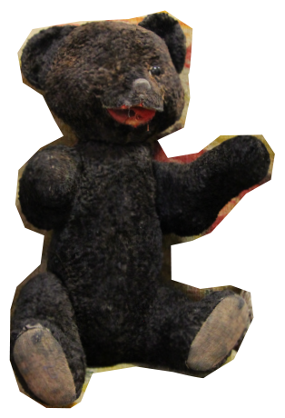

Задания от Лены Королёвой. Истории блокадных игрушек

При эвакуации на катере летом 1942 года на дороге жизни одна девочка получила меня из рук матроса. Он протянул ей меня, но девочка отказалась принять чужую игрушку, на что матрос заметил: «У него больше нет хозяина, теперь он твой». Вот так я оказался в семье Магуновых. Я очень долго жил в этой семье, даже внуки моей хозяйки росли вместе со мной. Пять лет назад дочка той девочки подарила меня музею. Теперь я замечательный экспонат, и о моей истории ежедневно узнают десятки посетителей.